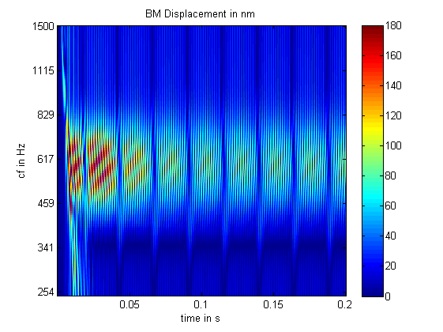

Clear stuff up and make an instance of the wrapper
close all; clear all; clc; clear classes; x = EssexAid_WrapClass;
Disable feedback loops in hearing aid to simplify problem
x.MOCfactor = 0; x.ARthreshold_dB = 200;
Firstly, make a pair of sinusoids that activate different channel of the aid
dt = 1/x.sr; tAxis = dt:dt:0.2; f = [x.channelBFs(3)*2^0.2 x.channelBFs(4)*2^-0.2]; dBlev = 60; s1 = sin(2*pi*f(1)*tAxis); s2 = sin(2*pi*f(2)*tAxis); figure; plot(tAxis,s1+s2,tAxis,s1,tAxis,s2) s1 = s1/sqrt(mean(s1.^2)); s2 = s2/sqrt(mean(s2.^2)); s1 = s1*20e-6*10^(dBlev/20); s2 = s2*20e-6*10^(dBlev/20);
Beating peaks 51 dB SPL. This makes sense as sine waves are presented at RMS 60 dB SPL each, so peak level is 63 dB the instantaneous compression kicks in at around 40 dB SPL with a DRNLc of 0.2. The sinusoids peak at 23 dB > compression threshold and 23*0.2=5.2. So each sinusoid is 45.2 dB after compression and the beating envelope is 6 dB greater than the maximum amplitude of each component (51.2 dB).
x.stimulusUSER = s1+s2; x = x.processStim; figure; plot(x)
If a 3rd sinusoidal component is added in another independent band, then the composite output is higher still, and this may have implications for the overstimulation of listeners with little or no residual cochlear filtering.
f(3) = x.channelBFs(5); s3 = sin(2*pi*f(3)*tAxis); s3 = s3/sqrt(mean(s3.^2)); s3 = s3*20e-6*10^(dBlev/20); x.stimulusUSER = s1+s2+s3; x = x.processStim; figure; plot(x)
Now to see what happens to the basilar membrane (bm) displacement when we pump the stimuli through auditory models.
% For this, we will use the simple 2 sine wave condition. A logical % starting point would be to see how the bm displacement looks for an % unimpaired model in response to the raw stimulus. % Map must be added to the matlab path MAProot = fullfile('..'); addpath(...fullfile(obj.MAProot, 'modules'),... fullfile(MAProot, 'utilities'),... fullfile(MAProot, 'MAP'),... fullfile(MAProot, 'parameterStore'),... fullfile('ASR files'));
This sets a nice dense filter spacing over the region of interest.
lowestBF=250; highestBF= 1500; numChannels=128; BFlist=round(logspace(log10(lowestBF),log10(highestBF),numChannels));
First show the "Normal" profile
hgload( fullfile('profiles','a20k.fig'))
ans =
4
Now show some output of the normal model
% Some stuff for plotting cLims = [0 180]; YTickIdx = 1:floor(numel(BFlist)/6):numel(BFlist); YTickIdxRev = numel(BFlist)+1-YTickIdx; % MAP1_14(stimulus, sampleRate, BFlist, participant, AN_spikesOrProbability, paramChanges); global DRNLoutput MAP1_14(s1+s2, x.sr, BFlist, 'Normal', 'probability'); figure; imagesc(tAxis, [],flipud(abs(DRNLoutput))*1e9, cLims) colorbar set(gca, 'YTick', YTickIdx); set(gca, 'YTickLabel', num2str( BFlist(YTickIdxRev)' )); ylabel('cf in Hz'); xlabel('time in s'); title('BM Displacement in nm')
The following is a plot of the impared profile
hgload( fullfile('profiles','a250.fig'))
ans =
6
. .. . and this is the output of the impared model in response to the same stimulus
MAPparamChanges= {' DRNLParams.a = 250;'};
MAP1_14(s1+s2, x.sr, BFlist, 'Normal', 'probability', MAPparamChanges);
figure; imagesc(tAxis, [], flipud(abs(DRNLoutput))*1e9, cLims)
colorbar
set(gca, 'YTick', YTickIdx);
set(gca, 'YTickLabel', num2str( BFlist(YTickIdxRev)' ));
ylabel('cf in Hz'); xlabel('time in s'); title('BM Displacement in nm')
Now to apply the aid with settings based on the impaired profile.
x.audiometry_dB = [55; 52; 48; 47; 52; 58]; x.TC_dBHL = 15*ones(size(x.TC_dBHL)); x.mainGain_dB = 0.75*x.audiometry_dB; x.stimulusUSER = s1+s2; x = x.processStim; figure; plot(x)
Now see how the BM displacement looks
MAPparamChanges= {' DRNLParams.a = 250;'};
MAP1_14(x.aidOPnice, x.sr, BFlist, 'Normal', 'probability', MAPparamChanges);
figure; imagesc(tAxis, [], flipud(abs(DRNLoutput))*1e9, cLims)
colorbar
set(gca, 'YTick', YTickIdx);
set(gca, 'YTickLabel', num2str( BFlist(YTickIdxRev)' ));
ylabel('cf in Hz'); xlabel('time in s'); title('BM Displacement in nm')
